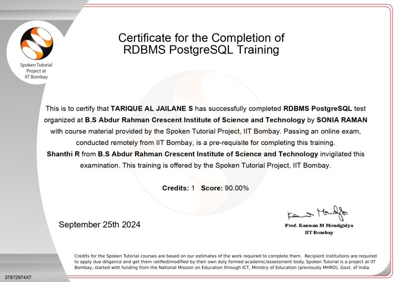

Tarique Al Jailane S.
Driven by curiosity and a passion for technology, I merge analytical precision with creative thinking to build purposeful digital solutions. My journey spans coding, portfolio development, and database management, empowering me to craft web projects that are not only functional but thoughtfully designed. I thrive in structured problem-solving, enjoy unraveling logic puzzles, and love experimenting with new tools—from mastering Excel Pivot Tables to designing themed portfolio pages. Whether it’s optimizing code or elevating a user interface, I approach challenges with clarity, adaptability, and a lifelong commitment to learning.
About Me
Name:
S.Tarique AL JailaneCurrent Location:
KBA Mens Hostel, BSAIST, Vandalur-600048, Tamil Nadu, India.Native Place:
Pudukkottai, Tamil Nadu, India.Career Objective:
To leverage my analytical mindset, technical skills, and creative problem-solving abilities to develop efficient software solutions and contribute to impactful digital projects. Passionate about continuous learning and innovation in the field of web development and data analysis.Technical Skills:
Certifications:
Strengths:
Interests:
Certificate Of Completion in Css Bootstrap Java scroipt And PHP Full stack Crash Course

üèÜ Certificate of Completion
completed the CSS, Bootstrap, JavaScript, and PHP Full Stack Crash Course on Udemy. This intensive training covered the foundations and advanced techniques required for modern full-stack web development.
üìå Course Highlights
Certificate for the completion of Python Training
üèÜ Certificate of Completion
Successfully completed Python Training, building a strong foundation in one of the most versatile and in-demand programming languages for modern software development.
üìå Course Highlights
Certificate for the completion of RDBMS PostgeSQL Training
üèÜ Certificate of Completion
completed the RDBMS PostgreSQL Training, gaining in-depth knowledge and hands-on experience with relational database management systems using PostgreSQL.
üìå Course Highlights
Certificate for the completion of C++ Training
üèÜ Certificate of Completion
completed C++ Training, acquiring a solid foundation in one of the most powerful and widely used programming languages in systems and application development.
üìå Course Highlights
Certificate for the completion of C Training
üèÜ Certificate of Completion
Successfully completed C Programming Training, acquiring foundational and practical skills in one of the most influential and performance-oriented programming languages used in system-level and embedded software development.
üìå Course Highlights
My Projects
- Online Exam System: https://cresonlineexam.gt.tc/
- Calculator: calculator-rupee.netlify.app
- Interest Calculator: interest-calculator-tj.vercel.app